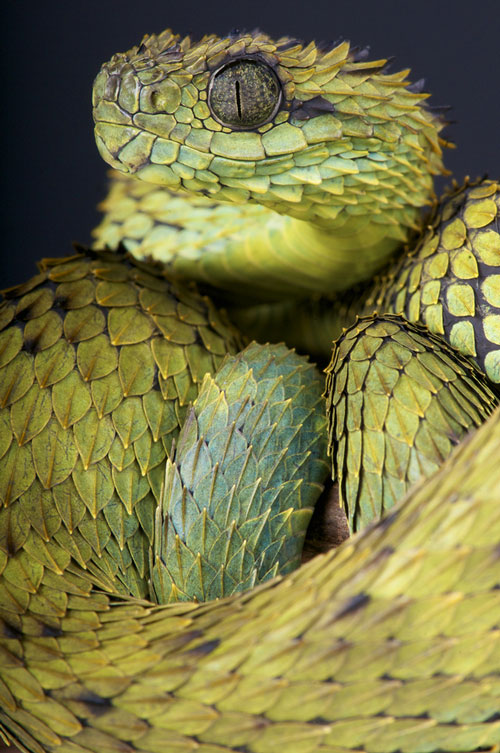

The Hairy Bush Viper
Classification
Kingdom: Animalia
Phylum: Chordata
Subphylum: Vertebrata
Class: Reptilia
Order: Squamata
Suborder: Serpentes
Family: Viperidae
Subfamily: Viperinae
Genus: Atheris
Species: A. hispida
Binomial name: Atheris hispida
About
This type of viper can grow up to 75 cm long. The males are usually longer and skinnier than the females. The Hairy Bush Viper is usually nocturnal and usually sleeps on leaves or flowers. During the day you can usually find them on stalks or reeds. This snake is comonly found in Central Africa. As for food they usually eat slugs, frogs, lizards, and birds. They also contain neurotoxin which makes them extremely dangerous to humans. During reproduction females have up to 12 babies at a time.